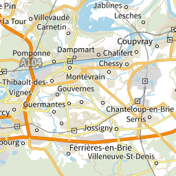

GPXSee Online Maps
GPXSee online map definition files ready to use. Simply download the XML file and open it in GPXSee as a map file. To use the map permanently, copy the file to the "maps" directory as found under Help->Paths.
Some maps require API keys or user credentials. Such map definition files have a ".tpl" extension instead of the usual ".xml" extension. You must fill in the required info and rename the file before you can use it in GPXSee.
Worldwide
 4UMaps |
 BlueMarble |
 BlueMarble - Arctica |
 CyclOSM |
 GIScience Heidelberg [TPL] |
 HERE Aerial Map [TPL] |
 HERE Base Map [TPL] |
 HERE Vector Tiles [TPL] |
 HikeBikeMap |
 MapTiler [TPL] |
 Mapbox Vector Tiles [TPL] |
 Open Street Map |
 Open Street Map - Black and White |
 Open Street Map - HiDPI |
 Open Topo Map |
 Thunderforest - Landscape [TPL] |
 Thunderforest - Neighbourhood [TPL] |
 Thunderforest - OpenCycleMap [TPL] |
 Thunderforest - Outdoors [TPL] |
 Thunderforest - Transport [TPL] |
 UNESCO |
 marshruty.ru |
 openAIP |
 ÖPNVKarte |
Antarctica
 Antarctica |
 BlueMarble - Antarctica |
 Landsat Image Mosaic of Antarctica |
Asia
 Slazav mountains |
Japan
 Geographical Institute Tile (標準地図) |
Taiwan (Republic of China)
 TWTOPO-happyman |
 TWTOPO-rudy |
Europe
 Open Flighmaps |
 map1.eu |
 mtbmap.cz |
Austria
 Basemap AT Farbe |
 Basemap AT Orthofoto |
Belgium
 NGI |
Bulgaria
 BGMountains |
Croatia
 Digitalni ortofoto |
 Topografska karta 25k |
Czech Republic
 Poloha.Net |
 Prahou na kole |
 ČÚZK - Ortofoto |
 ČÚZK - Základní mapy |
Denmark
 SDFE - Ortofoto forår [TPL] |
 SDFE - Skærmkort [TPL] |
Estonia
 Maa-amet Topo |
Finland
 Ilmakuva (Aerial image) [TPL] |
 Karjalankartta (Maps of Karelia) 100k |
 Karjalankartta (Maps of Karelia) 20k |
 Maastokartta (Topographic map) [TPL] |
 MapAnt |
 Selkokartta (Plain map) [TPL] |
 Taustakartta (Background map) [TPL] |
France
|  Cartes IGN |
 Photographies aériennes |
Germany
 Bayern DOP |
 Berlin DOP |
 Berlin DTK10 |
 Berlin DTK50 |
 Hamburg DOP |
 Nordrhein-Westfalen DOP |
 Rheinland-Pfalz DOP |
 Rheinland-Pfalz DTK25 |
 Rheinland-Pfalz DTK5 |
 Sachsen DOP |
 Sachsen WebAtlas |
 Sachsen-Anhalt DOP |
 TopPlusOpen |
Hungary
 Turistautak |
Iceland
 Iceland Atlas |
 Iceland Landscape |
 Iceland Map |
Latvia
 LGIA - topo |
Netherlands
 PDOK OpenTopo |
 PDOK Ortho25 2017 |
Norway
 Jan Mayen Topography |
 Svalbard Orthophoto |
 Svalbard Satellite Imagery |
 Svalbard Topography |
 Topografisk Norgeskart |
Poland
 GUGIK Mapa Topograficzna |
 GUGIK Ortofotomapa |
 UMP-pcPL |
Russian Federation
 GGC 1km |
 GGC 250m |
 GGC 2km |
 GGC 500m |
 O-sport |
 OpenTopoMap.ru |
 Races |
 Slazav map |
 Topo 1km |
 Topo 250m |
 Topo 500m |
Slovakia
 Freemap Slovakia |
 GKÚ - Ortofotomozaika |
 GKÚ - ZBGIS |
Slovenia
 Slovenia - DPK750 |
 Slovenia - DTK50 |
 Slovenia - ortofoto |
Spain
 Cartografía raster del IGN |
 ICV - Mapa topográfico |
 IDECanarias Mapa Topográfico |
 IDECanarias Orto |
 IDENA - Mapa base |
 IDENA - Mapa topográfico |
 IDENA - Ortofoto |
 Ortoimágenes de España |
Sweden
 Historiska ortofoton [TPL] |
 Topografisk Webbkarta [TPL] |
Switzerland
 OSM Switzerland |
 OSM Switzerland Swiss Style |
 Swisstopo - 25k |
 Swisstopo - Landeskarte |
 Swisstopo - Swissimage |
United Kingdom (Great Britain)
 OS Leisure [TPL] |
 OS Outdoor [TPL] |
 OS Road [TPL] |
North America
Canada
 Canada - Toporama |
United States of America
 ChartBundle.com - Sectional |
 USGS Imagery |
 USGS Topo |
Oceania
New Zealand
 NZ Topo Map 250 |
 NZ Topo Map 50 |